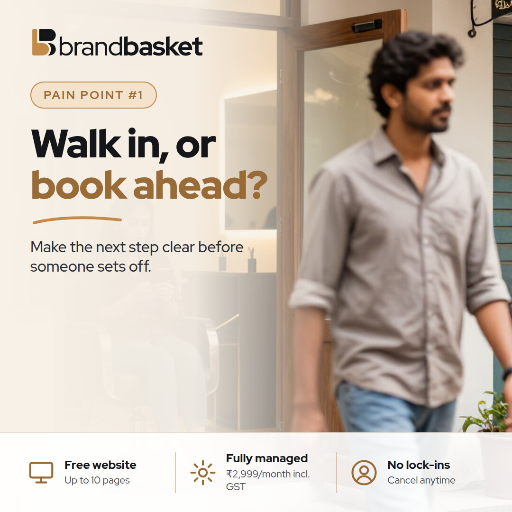
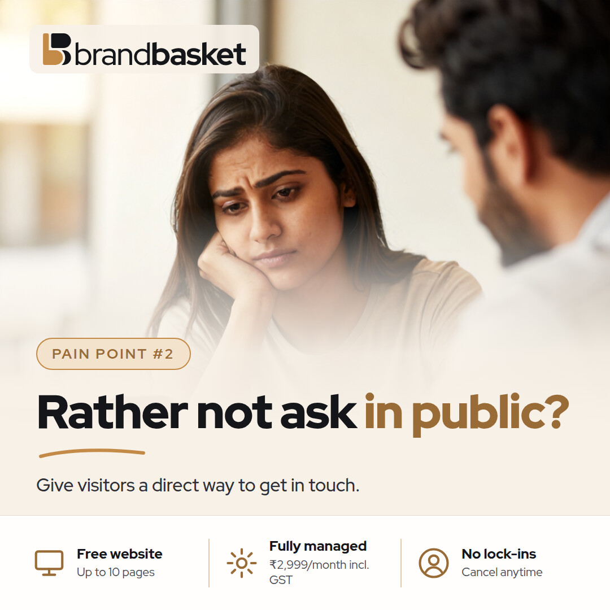
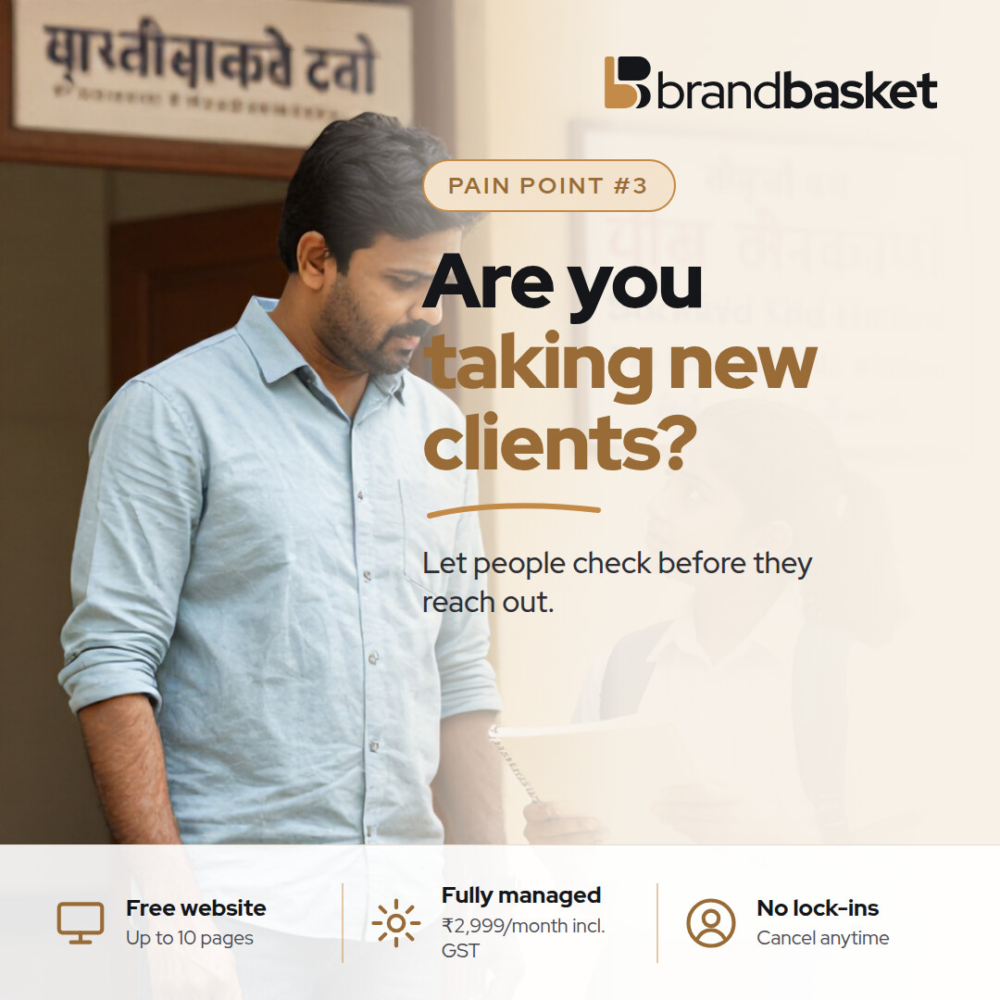
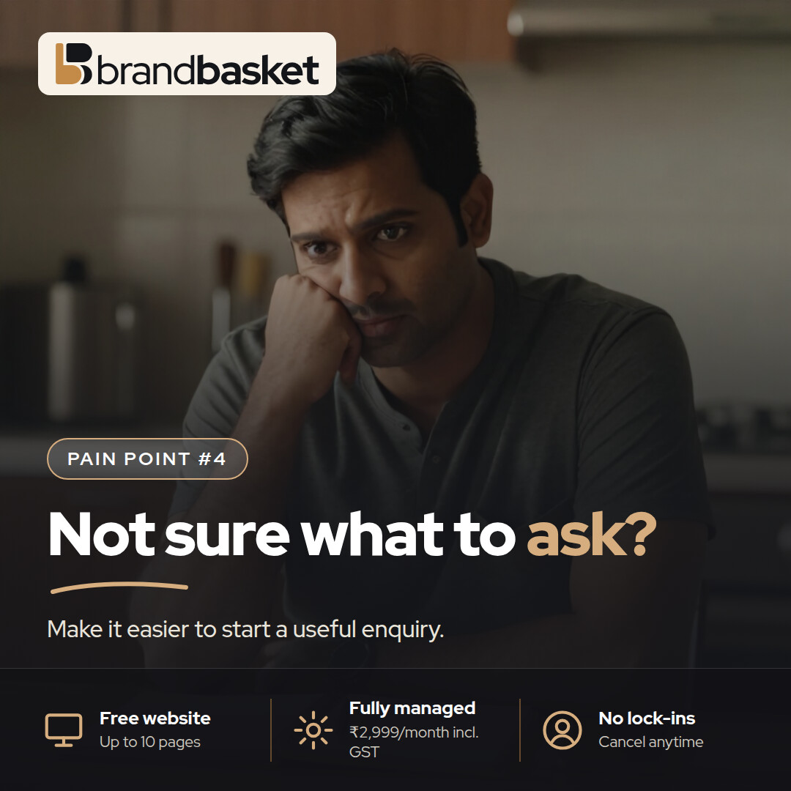
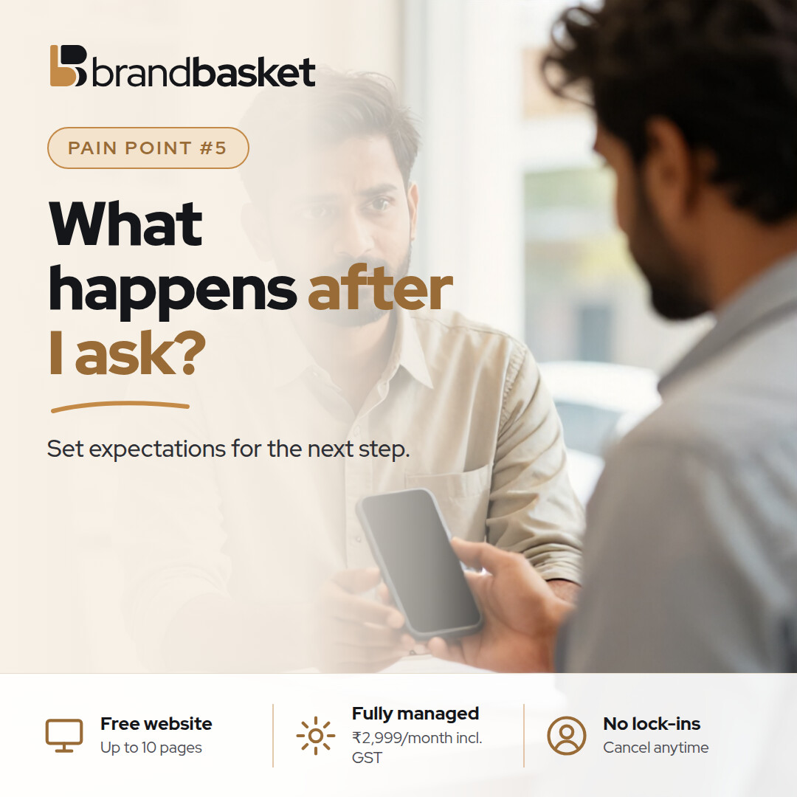
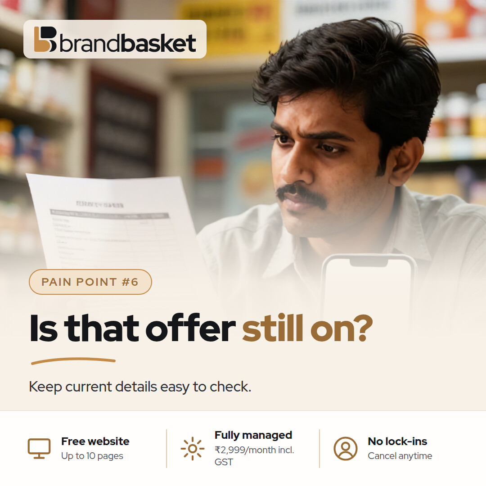
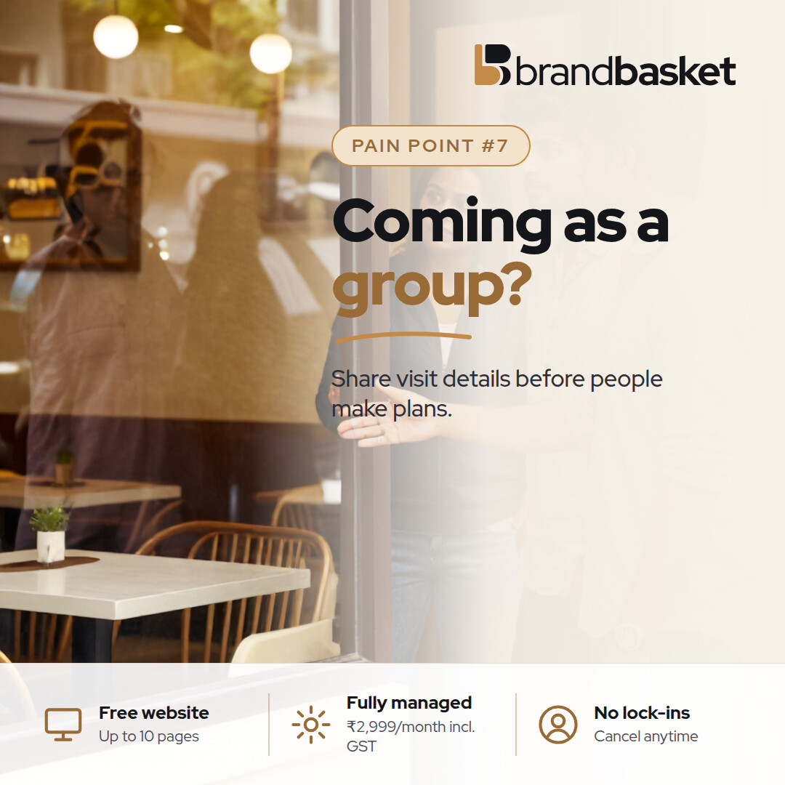

w04-d1 · 2026-12-12T10:00:00+05:30
A potential visitor cannot tell whether to walk in or arrange a visit first.
Before someone heads over, they may wonder: “Can I just walk in, or should I arrange a visit first?”
If that detail is hard to find, they may put off coming or call just to check. A clear website can explain how visits work, so people know what to expect before they leave home. Brandbasket builds professional websites with up to 10 pages for ₹0, live in 7 working days. Hosting, SSL, backups, security updates and uptime monitoring are covered for ₹2,999 a month incl. GST.
Start your free website at brandbasket.in (link in bio).
#LocalBusiness #SalonIndia #SmallBusinessIndia #BusinessWebsite #WebsiteForBusiness #IndiaBusiness #Brandbasket

w04-d2 · 2026-12-13T10:00:00+05:30
A person has a question but does not want to ask it in a public social media comment.
Some questions feel awkward to ask in a public comment.
A person considering a clinic, salon or coaching institute may want to ask privately before deciding what to do next. A website with an enquiry form, WhatsApp and click-to-call gives them a direct route to the business instead of making a public post. Brandbasket builds professional websites for ₹0, with up to 10 pages, and they go live in 7 working days. Hosting, SSL, backups, security updates and uptime monitoring are ₹2,999 a month incl. GST.
Start your free website at brandbasket.in (link in bio).
#LocalBusinessIndia #CustomerEnquiries #SmallBusinessIndia #BusinessWebsite #WhatsAppBusiness #IndiaBusiness #Brandbasket

w04-d3 · 2026-12-14T10:00:00+05:30
A customer is unsure whether a local business is currently taking on new customers.
“Are you taking new students right now?” It is a simple question, but a parent may hesitate to ask if they are not sure where to start.
A website can make it easier to share whether enquiries are welcome and how to contact the institute. Brandbasket builds professional websites with up to 10 pages for ₹0, live in 7 working days. Click-to-call, WhatsApp and enquiry forms give visitors a clear way to get in touch. Hosting, SSL, backups, security updates and uptime monitoring are included for ₹2,999 a month incl. GST.
Start your free website at brandbasket.in (link in bio).
#CoachingInstitute #EducationIndia #LocalBusiness #SmallBusinessIndia #BusinessWebsite #IndiaBusiness #Brandbasket

w04-d4 · 2026-12-15T10:00:00+05:30
A customer does not know what details to include when asking a business about a specific need.
“What should I include in my message?”
When someone has a specific question, a blank message window can feel like a hurdle. A website can give visitors a clear place to begin, with an enquiry form alongside WhatsApp and click-to-call options. The business can explain what information would help it respond. Brandbasket builds professional websites for ₹0, up to 10 pages, and gets them live in 7 working days. Hosting, SSL, backups, security updates and uptime monitoring are ₹2,999 a month incl. GST.
Start your free website at brandbasket.in (link in bio).
#CustomerEnquiries #LocalBusinessIndia #SmallBusinessIndia #WebsiteDesign #BusinessWebsite #IndiaBusiness #Brandbasket

w04-d5 · 2026-12-16T10:00:00+05:30
A customer is unsure what will happen after they send an enquiry.
Sending an enquiry is easier when you know what happens next.
A customer may wonder whether to wait for a reply, call the business, or visit in person. A website can explain the preferred way to get in touch and what the next step usually is. Brandbasket builds professional websites with click-to-call, WhatsApp and enquiry forms, for ₹0 and live in 7 working days. Hosting, SSL, backups, security updates and uptime monitoring are covered for ₹2,999 a month incl. GST.
Start your free website at brandbasket.in (link in bio).
#LocalBusiness #CustomerExperience #SmallBusinessIndia #BusinessWebsite #CustomerEnquiries #IndiaBusiness #Brandbasket

w04-d6 · 2026-12-17T10:00:00+05:30
A customer sees an old promotion shared online and cannot tell whether it is still valid.
A promotion shared weeks ago can leave someone wondering: “Is this still available?”
When an old post keeps circulating, customers may not know which details are current. A website gives the business a place to point people for up-to-date information. Brandbasket includes 2 edits a month, 15 minutes each, and a monthly health report with its website service. The site is built for ₹0 and live in 7 working days; hosting, SSL, backups, security updates and uptime monitoring are ₹2,999 a month incl. GST.
Start your free website at brandbasket.in (link in bio).
#LocalBusinessIndia #SmallBusinessIndia #BusinessUpdates #BusinessWebsite #ShopLocalIndia #IndiaBusiness #Brandbasket

w04-d7 · 2026-12-18T10:00:00+05:30
A customer planning a group visit cannot tell whether the business can accommodate their party.
Planning a meal with friends often comes with one practical question: “Can we all come together?”
If people cannot find information about group visits, they may have to call before making plans. A website can share the details the cafe wants visitors to know and offer a clear way to ask a question. Brandbasket builds professional websites with up to 10 pages for ₹0, live in 7 working days. Click-to-call, WhatsApp and enquiry forms are included. Hosting, SSL, backups, security updates and uptime monitoring cost ₹2,999 a month incl. GST.
Start your free website at brandbasket.in (link in bio).
#CafeIndia #LocalBusiness #SmallBusinessIndia #RestaurantWebsite #BusinessWebsite #IndiaBusiness #Brandbasket